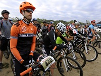
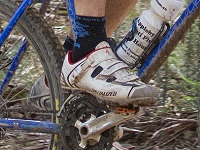
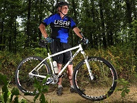
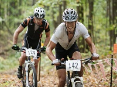

Cross Country Mountain Bike Racing
Cross Country courses consist of a series of interlinked tracks over differing terrain. This includes forest paths, dirt tracks, rocky tracks and occasionally paved paths (although these usually just link the other tracks).
Cross Country bikes are the lightest of all mountain bikes weighing between 7 and 16Kg. They always have front suspension and occasionally have rear suspension as well depending on the preference of the rider.
Cross Country remains the only mountain bike discipline to become an Olympic event.



